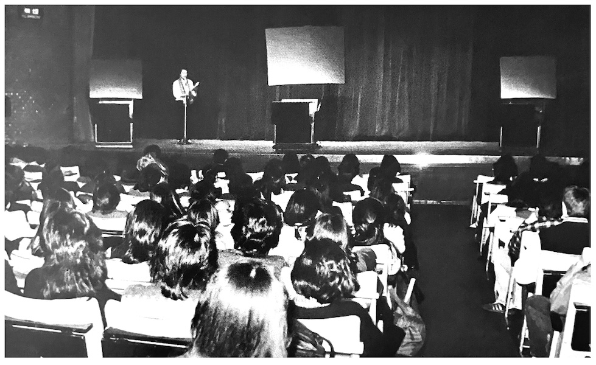

December 1983 Video Concert Report
An Immersive 120 Minutes of Drama

The video concerts held last December in Osaka (15th), Nagoya (16th), and Tokyo (21st) weren't as successful as we'd hoped, but thanks to an enthusiastic response from people who attended we were able to see it through to the end. We apologize for having to charge a few yen to see these shows, but it couldn't be helped. We also apologize to those in rural areas who couldn't attend.
The video we were screening was, as you know, a live performance Queen gave at Seibu Stadium on November 3rd, 1982, which had already been released on VHS back in September in a truncated format. The original had inevitably undergone significant editing to bring it down to a commercially-viable 60-minute version. The decision on what to cut and what to leave in was left solely up to the subjective judgment of the editor and his thoughts of what was of best quality for the release. In light of this, the fanclub had received requests for the original version!
As for the video concert screenings themselves, the attendance was underwhelming. Perhaps it was due to lack of publicity or perhaps it was because it was held on a weekday afternoon, we don't know. But the Osaka venue, which had a capacity of 300 people, saw only about 60 people show up for both screenings. That said, because the video equipment was in good condition, the picture was quite clear and we were able to fully enjoy Queen's powerful performance.
The venue in Nagoya was a well-known live music venue, having recently been featured in an NHK drama. About 100 people were there, and it was a fairy lively screening.
The venue in Tokyo had a capacity of about 400 people, but only about 100 people were there. We were a little disappointed at the low turnout, but it didn't matter as the show had to go on in this intimate atmosphere. Regardless, they had splurged on one 72" projector screen flanked by two 50" screens on either side, so it was a grand affair.
The original video was unedited, so it began with the crew setting up, giving the audience a glimpse of the stoic moment before the show begins, delivering for the fans a raw, thrilling experience. While some viewers might have found the prologue a bit long, it actually helped to evoke the feeling of anticipation the fans felt at the actual show in the flesh.
Afterwards, the feedback we received from people was overwhelmingly positive, with words like "great" and "wonderful" being used. However, there was one flaw: due to an editing error in the video itself, Bohemian Rhapsody was completely omitted. We sincerely apologize about this!